Calligraphy and Design
In certain circles of Calcutta, Ray was wellknown as an eminent graphic designer, simultaneous to his film career. Ray illustrated all his books and designed covers for them, as well as creating all publicity material for his films. For example, Ray's artistic experimentation with Bengali graphemes is highlighted in his cine posters and cine promo-brochures' covers. He also designed covers of several books by other authors.
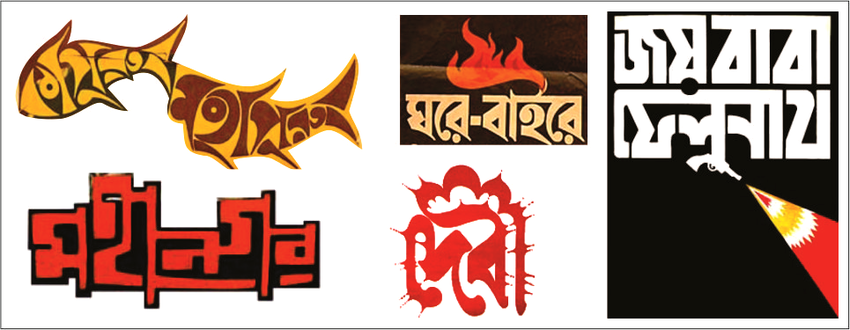
Ray designed four typefaces for roman script: Ray Roman, Ray Bizarre, Daphnis, and Holiday script, apart from numerous Bengali ones for Sandesh magazine. Of those, Ray Roman and Ray Bizarre won an international competition in 1971.
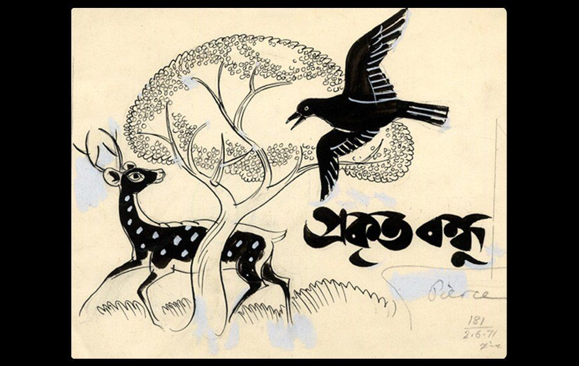
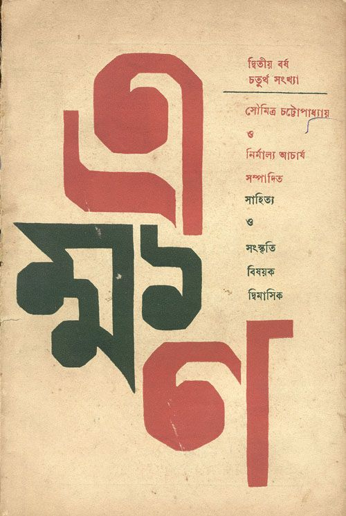
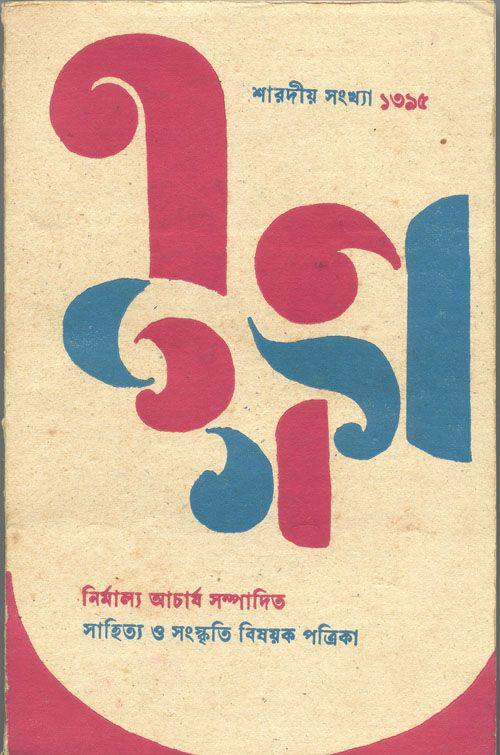
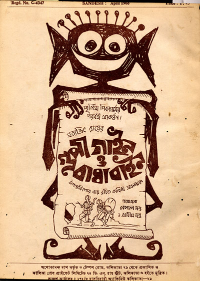
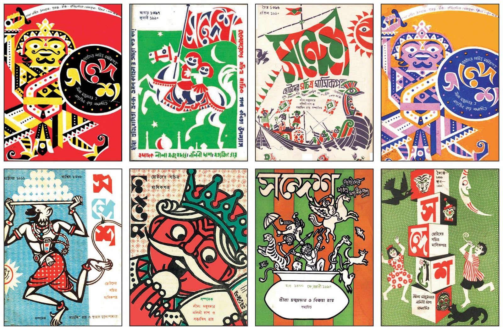

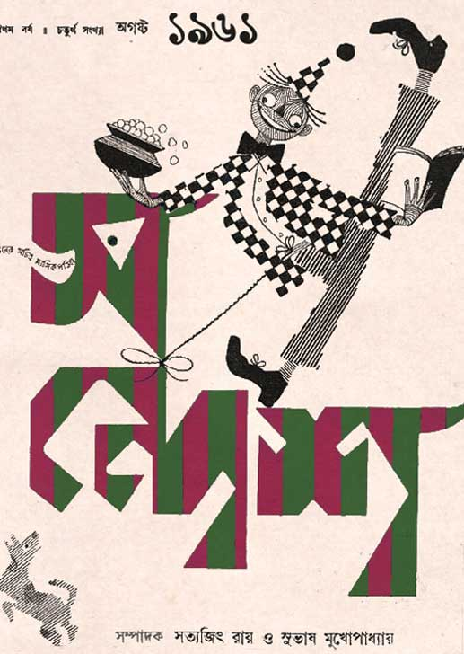
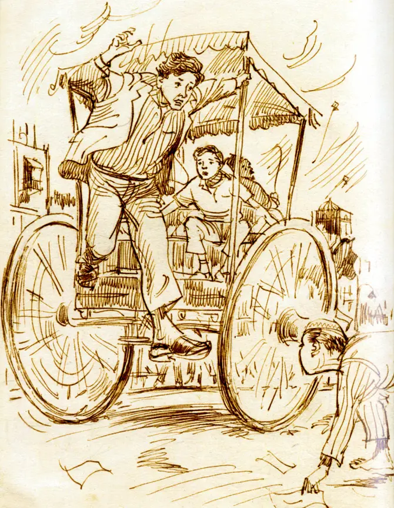
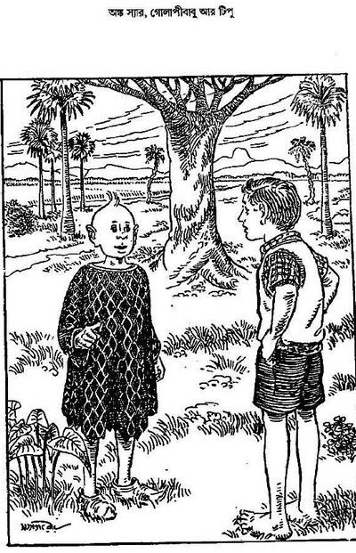
As a graphic designer, Ray designed most of his film posters, combining folk art and calligraphy to create themes ranging from mysterious and surreal to comical; an exhibition for his posters was held at the British Film Institute in 2013. He would master every style of visual art, and could mimic any painter, as evidenced in his book and magazine covers, posters, literary illustrations, and advertisement campaigns.
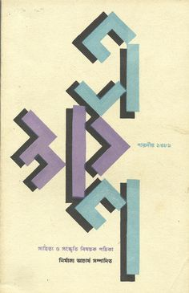
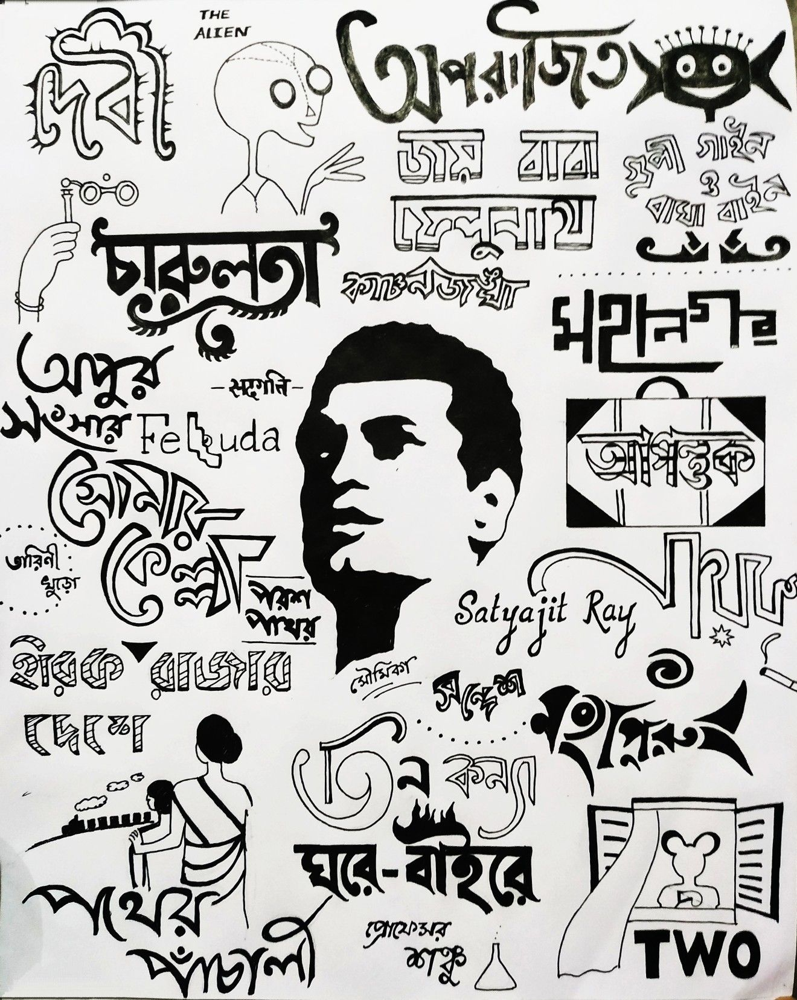
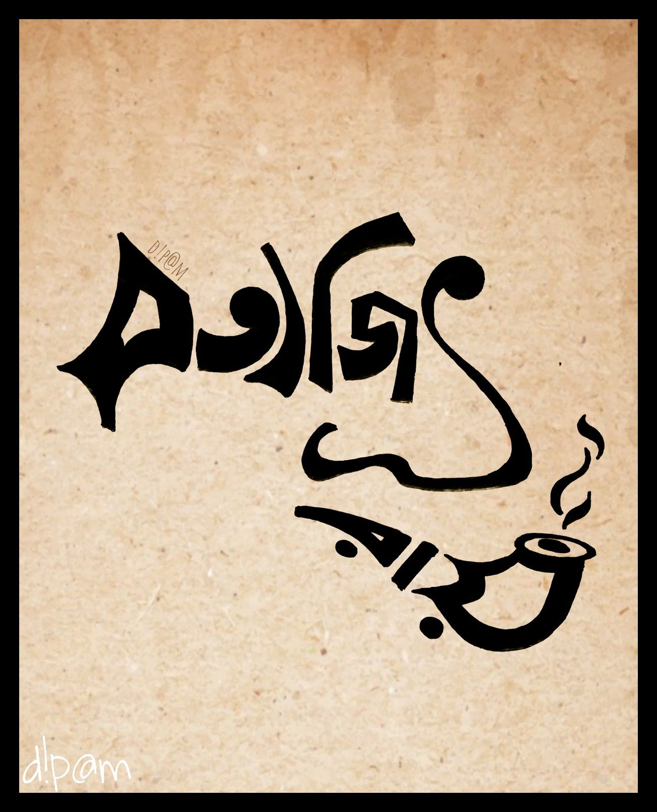

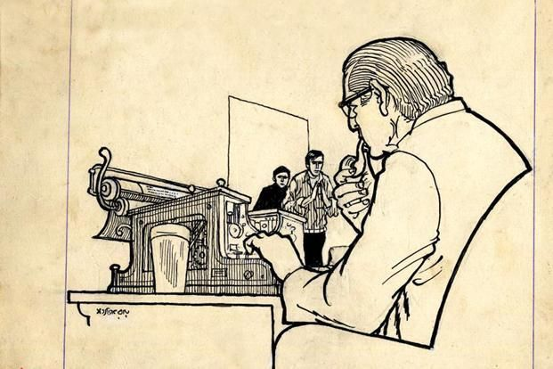
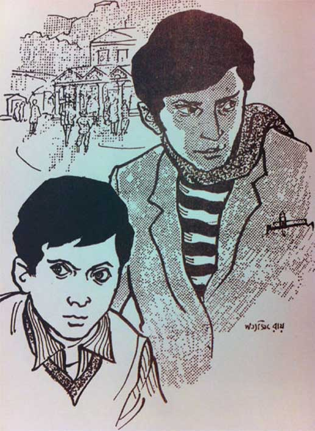
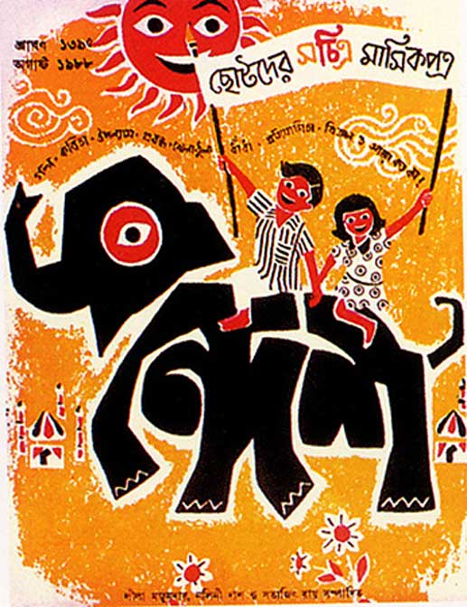

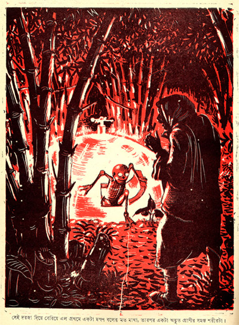